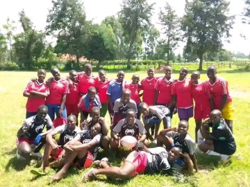

Clubs & Societies
Debate club, journalism, environment club, drama, and scouting activities run weekly.
Clubs, sports, and student development
School life at KIKAI Girls encourages participation, creativity, teamwork, and leadership beyond the classroom.
Debate club, journalism, environment club, drama, and scouting activities run weekly.

Handball, athletics, volleyball, and indoor games support physical wellness and teamwork.
Regular mentorship sessions focus on confidence building, career awareness, and life skills.

Planned excursions expose learners to science centers, universities, and civic institutions.
Students engage in community outreach and social responsibility initiatives each term.

Prize-giving day, cultural events, and inter-school competitions celebrate student talent.